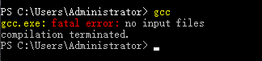
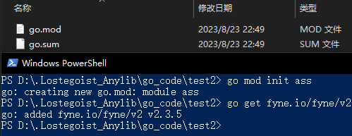

关于Go语言的GUI库之fyne在Windows平台上的安装流程
在一时兴起之下，我开始了go语言的学习。为了能构建出更贴近日常使用的程序，经过查询，我打算使用fyne来作为GUI库。
经过网上的检索，我汇总为如下的流程。
前置作业
当你打算使用fyne作为GUI库时，你需要先准备3样道具
- Go工具(至少为1.12版本)golang.google.cn
- C 编译器(本教程将使用MSYS2和mingw编译器)msys2.org/
- 系统图形驱动程序(在Windows中并不需要动手操作)
当准备好前两个工具的文件就可以准备开始了
两个文件都是比较简单的安装步骤，一路通过即可。
安装完Go后，请在系统环境变量中检查是否将go/bin添加至了path(一般会自动添加进系统变量)
MSYS2中执行安装mingw编译器
当安装完msys2后，会弹出MSYS的终端工具。但是请关闭掉这个工具，从开始菜单的左侧程序列表中找到“MSYS MINGW64”并打开。
在MSYS MINGW64窗口中执行以下代码(如果有要求安装选项，请选择全部安装,安装过程有些长。)
$ pacman -Syu
$ pacman -S git mingw-w64-x86_64-toolchain
安装完成后请将“MSYS64\mingw64\bin”添加进系统变量path中，具体方法请自行查询。
然后请打开powershell或者cmd，并输入gcc来检查是否正常添加C编译器。以下输出即为成功。
安装fyne库
进入你的项目文件夹，按住shift并右键，点击“在此处打开powershell窗口”。并执行如下命令以安装fyne模块。(注：关于以下命令的执行位置，笔者可能有勘误，请自行测试。)
go get fyne.io/fyne/v2@latest
go install fyne.io/fyne/v2/cmd/fyne@latest
会报错说明需要一个.mod文件，请在你的项目文件夹内打开powershell并输入以下指令。
go mod init “此处填写你自定义的模块名”
然后再执行上述命令，至此fyne已成功安装。
导入fyne库
安装fyne库后，则需要在正式项目中导入使用。
在项目文件夹下打开powershell窗口，并键入以下指令初始化包
go mod init “此处填写你自定义的模块名”
执行下面命令以导入fyne库。
go get fyne.io/fyne/v2

以上结果为成功例子。接下来便是构建main.go文件来编写例子，以下为示例代码。
package main
import (
"fyne.io/fyne/v2/app"
"fyne.io/fyne/v2/container"
"fyne.io/fyne/v2/widget"
)
func main() {
a := app.New()
w := a.NewWindow("Hello")
hello := widget.NewLabel("Hello Fyne!")
w.SetContent(container.NewVBox(
hello,
widget.NewButton("Hi!", func() {
hello.SetText("Welcome :)")
}),
))
w.ShowAndRun()
}
解决常见报错
如果按上述方法写下了代码，你可能会发现有大量的报错警告。原因可能为代码中使用了第三方库，但是go.mod中并没有更新。
而解决方法如下，在项目文件夹下打开powershell并执行如下命令。
go mod tidy
这行代码的会删除不需要的包，并下载新的包而更新go.mod。
或许即使运行完上述命令，警告还是存在，可以重启编辑器以刷新，发现没有报错。
编译与运行
使用以下命令以运行main.go,请在项目文件夹下打开powershell并键入。
go run main.go
或者使用以下命令将文件编译为exe可执行文件，编译时间可能有些长。
go build -x main.go
参考链接
https://developer.fyne.io/started/
https://zhuanlan.zhihu.com/p/401188789
https://blog.csdn.net/iamhuanyu/article/details/129670053#circle=on

Powered by @lostegoist
©2023-2023 LOEG-command